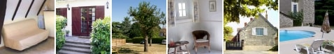
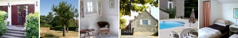
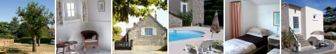
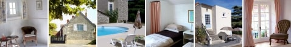
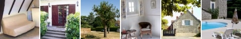
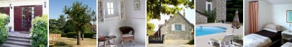
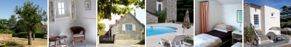
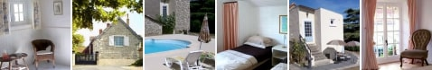

Cherry Lodge
LA ROCHE-POSAY • FRANCE
 









Un peu au sud de la vallée de la Loire, à mi-chemin entre Paris et Bordeaux, dans la région
populaire et charmante de Poitou-Charentes, se niche la ville pittoresque et historique
de La Roche-Posay.
Les appartements de "Cherry Lodge", c'est-à-dire
Les Lauriers (à une chambre, de 1 à 4 couchages),
La Lavande (à une chambre, de 1 à 4 couchages),
Les Tournesols (à deux chambres, de 1 à 5 couchages) and
Les Vignes (à deux chambres, de 1 à 5 couchages),
font partie d'une maison de ferme et ses écuries anciennes qui datent de 1800.
D'accès facile de la côte de l'ouest et La Rochelle, La Roche-Posay est située à seulement 45 minutes en voiture (ou service d'autobus) de la cité célèbre de Poitiers. Nous avons rénové avec soin ces bâtiments et nous avons gardé les caractéristiques originales telles que les poutres de chêne et les volets. Mais ils offrent naturellement tout le confort d'une habitation moderne.
Situé sur un espace tranquille avec une grande piscine privée, Cherry Lodge est la retraite idéale dans ce paysage pittoresque, et fait une base excellente de laquelle on peut explorer cette région charmante de la France. C'est aussi l'endroit parfait pour s'échapper dans ces environs vivifiants.
Que l'on ait envie d'explorer les régions vinicoles de la Loire avec tous ses châteaux, ou encore les distilleries excellentes de Cognac, Cherry Lodge jouit d'une situation idéale pour accéder ˆ de nombreuses attractions-la plus populaire étant Futuroscope, le parc consacré à l'industrie cinématographique. On peut aussi être transporté au temps jadis et explorer les villages médiévaux de la région, tels que Angles sur L'Anglin, répertorié comme l'un de "Beaux Villages" de France ou même plus loin au temps des troglodytes.
La ville élégante et historique de La Roche-Posay, grouillante de restaurants et de cafés est célèbre pour ses thermes et ses établissements de cures qui utilisent les qualités exceptionnelles des eaux de source naturelle pour leurs maladies de la peau ou après un traitement pour le cancer. Cette destination de vacances varieés dispose même de son propre casino et d'un hippodrome offrant six rendez-vous par an.
Pour le vacancier plus actif, La Roche-Posay possède également son propre terrain de golf (mais il en existe bien d'autres dans la Vienne). La région offre enfin, pour les amateurs, un territoire de pêche inépuisable, puisque La Roche-Posay se situe juste à l'ouest du Parc Naturel Régional de la Brenne, avec ses nombreux lacs.


info@cherrylodge.fr • Tél: 0033 (0)5 49 23 18 57